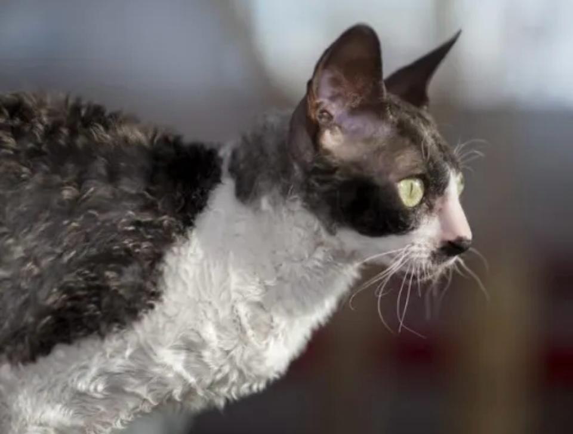
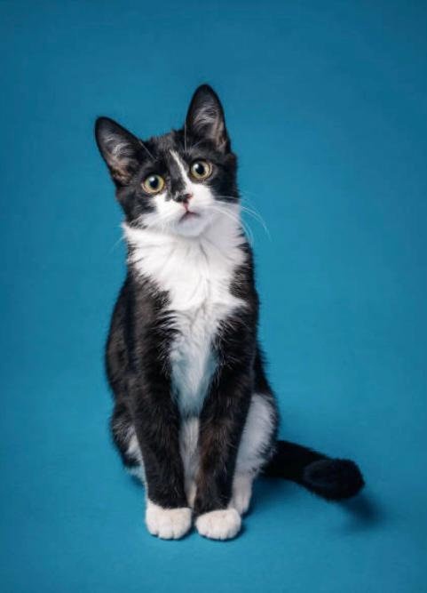
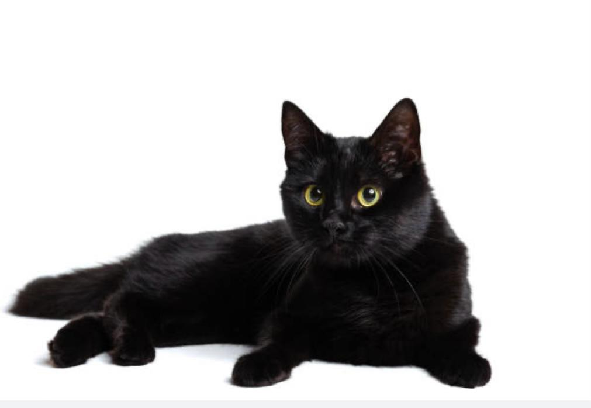
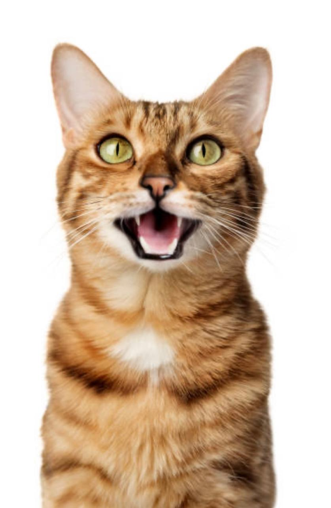
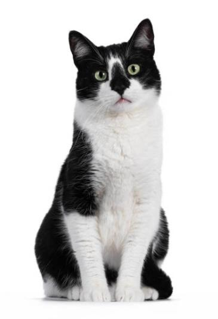
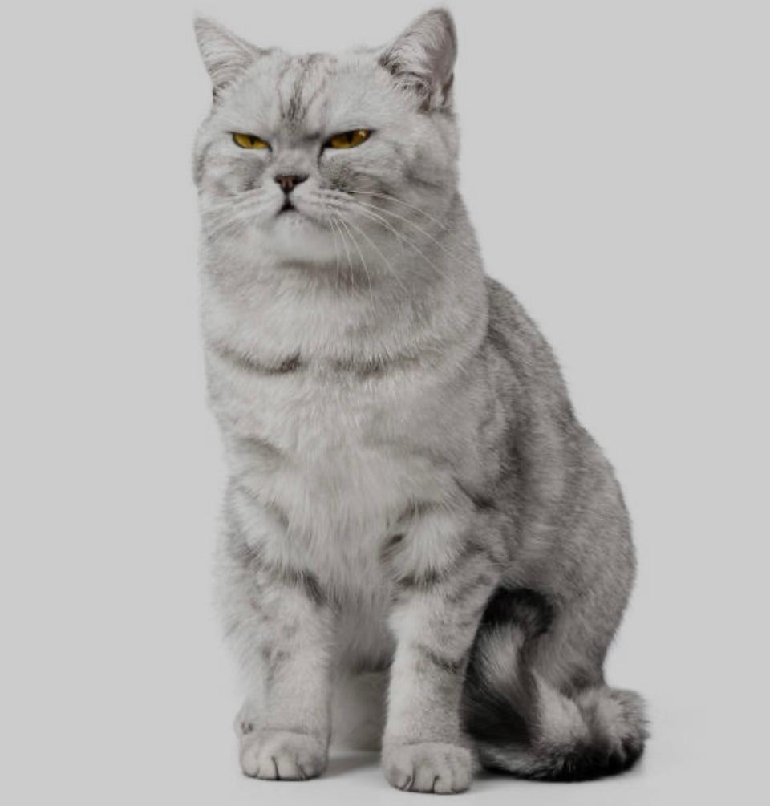

Proteção
Ambientes mais limpos, água disponível e alimentação adequada.
Proteção animal • Bangu, Rio de Janeiro
O Patas Livres une bem-estar animal, dignidade e ressocialização no cuidado aos gatos do Instituto Penal Djanira Dolores de Oliveira.





Uma iniciativa que cuida dos animais e cultiva novas possibilidades.
Sobre o Patas Livres
O Patas Livres é um projeto de proteção e bem-estar animal voltado aos gatos que vivem nas dependências do Instituto Penal Djanira Dolores de Oliveira, em Bangu.
A iniciativa propõe melhorar as condições de vida dos animais e unir saúde, controle populacional, educação, responsabilidade e respeito à vida. Com participação voluntária e autorização institucional, as internas poderão colaborar em atividades humanitárias de cuidado animal.
Veja as frentes de atuaçãoAmbientes mais limpos, água disponível e alimentação adequada.
Atenção veterinária, identificação e controle reprodutivo.
Aprendizado, empatia e responsabilidade coletiva.
Como o projeto vai atuar
As ações serão conduzidas em parceria com a unidade e com acompanhamento veterinário, conforme autorizações e avaliação de cada situação.
Higienização dos locais de permanência e instalação de caixas de areia e caminhas adequadas aos diferentes corredores.
Pontos próprios com água limpa e ração, além de recipientes de resíduos protegidos para evitar o acesso dos gatos a restos de comida.
Captura cuidadosa, identificação individual com microchip e encaminhamento à Clínica Atlantic Vet para avaliação veterinária.
Exames clínicos, ultrassonografia quando indicada e castração conforme a avaliação e a liberação do profissional veterinário.
Campanha para encontrar lares definitivos, com orientação e acompanhamento. Familiares das internas poderão ser priorizados quando possível.
Atividades educativas sobre bem-estar animal, higiene, responsabilidade e respeito à vida, com participação voluntária e autorizada.
A possibilidade de reconhecimento das atividades para fins de remição de pena está em estudo e depende da legislação aplicável e da autorização das autoridades competentes.
Onde tudo começa
O Instituto Penal Djanira Dolores de Oliveira, no Complexo Penitenciário de Gericinó, será a unidade-piloto do Patas Livres. Depois da implantação e avaliação dos resultados, a proposta é desenvolver uma metodologia que possa inspirar ações em outras unidades.
Cuidar dos animais também é uma forma de transformar vidas.
PATAS LIVRES

Adoção com responsabilidadeUm novo começo
O projeto prevê uma campanha de adoção responsável para aproximar os gatos de famílias preparadas para acolhê-los. Cada adoção deverá ser orientada e acompanhada pela equipe responsável.
Quer saber como participar ou acompanhar as próximas etapas?
Fale com a equipeUma rede pelo cuidado
O Patas Livres é construído com colaboração, compromisso e apoio profissional.
Faça parte dessa rede
Converse com a equipe e saiba mais sobre o Patas Livres, suas ações e formas de colaboração.
Chamar no WhatsApp